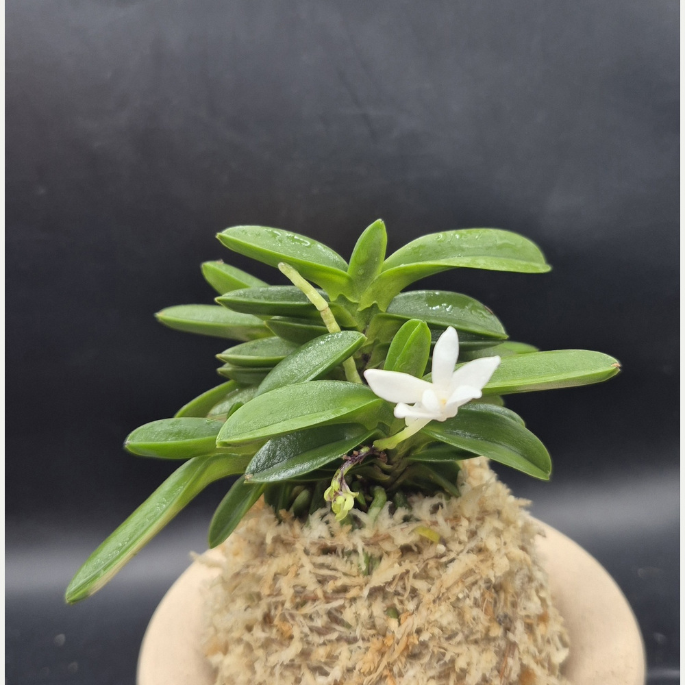
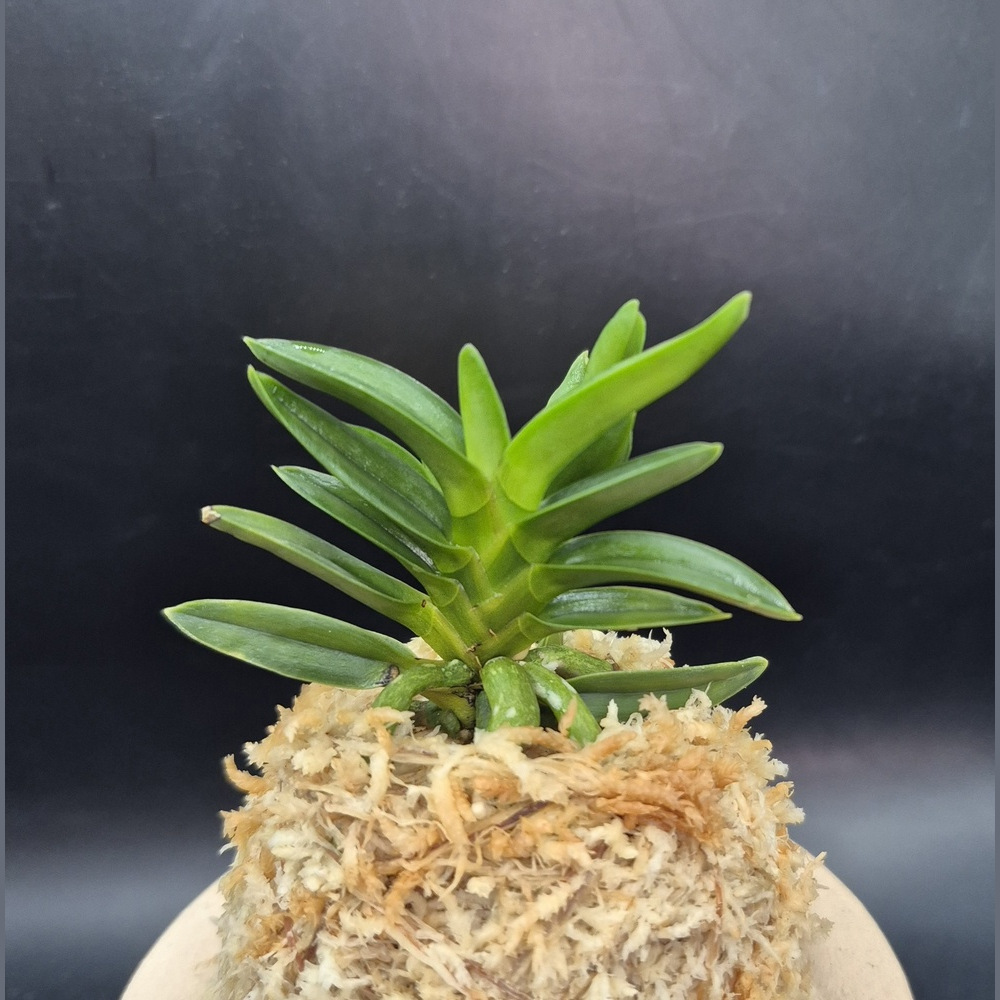

CSFART
숯돌꽃 난농원
CSFART 상품 안내
무지
호·중반
복륜
특예
호반
화물
입문·기타란
석곡
자재
옆으로 밀면 메뉴가 더 있어요 ›
CSFART COLLECTION
무지
상품

요산(樂山) 1024 · 두엽·역엽
75,000원
무지 두엽 · 실제 개화 · CSFART요산_1024
동환(童丸) 0001 · 극소형 두엽
70,000원
무지(청) · 짧고 둥근 잎 · CSFART동환_0001

취선(翠扇) 1023 · 3촉 두엽
120,000원
무지 · 3촉 · 청축·청근 · CSFART취선_1023